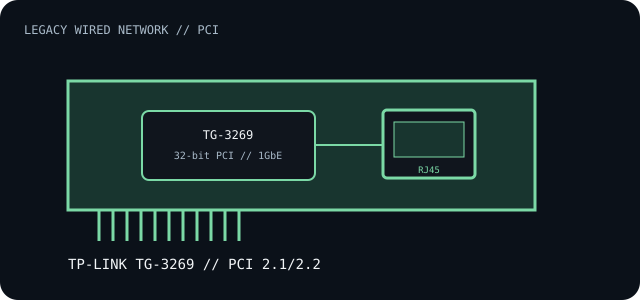

[ INDIVIDUAL COMPONENT // EXPANSION CARDS ]
TP-Link TG-3269
Legacy 32-bit conventional PCI Gigabit Ethernet adapter for desktops whose motherboard still provides a compatible PCI slot.

IDENTIFICATION: The TG-3269 has multiple hardware revisions. Match the exact version printed on the card to the TP-Link manual/driver; controller silicon and supported OS may differ between revisions.
Specifications and compatibility
| Exact model | TP-Link TG-3269 Gigabit PCI Network Adapter. |
|---|---|
| Controller | Controller part is revision-dependent; TP-Link's model family must not be assumed to contain one identical chip. Identify by board markings or PCI vendor/device ID. |
| Bus / host interface | 32-bit conventional PCI, compliant with PCI 2.1/2.2. This is not PCI Express; check slot keying, signaling voltage and motherboard PCI support. |
| Ethernet standards / rates | 10BASE-T, 100BASE-TX and 1000BASE-T; IEEE 802.3, 802.3u and 802.3ab, with flow-control/VLAN functions dependent on the controller driver. |
| Ports / connectors | One RJ-45 copper port. Cat 5e or better is appropriate for Gigabit links; link rate and cable run are negotiated with the peer. |
| OS / driver compatibility | TP-Link's legacy documentation lists Windows generations through Windows 7 plus Linux/NetWare for applicable revisions. Modern Windows/Linux support is not guaranteed; use the exact revision's driver and OS matrix. |
| Revision / host caveat | Confirm PCI slot voltage/keying, card revision, NIC controller and driver signature. A physically fitting PCI slot does not establish supported signaling or operating-system driver availability. |
Installation and archival notes
- Do not insert into a PCIe slot; PCI and PCI Express use different electrical interfaces and connector keying.
- Record hardware version, PCI ID, driver, link partner and negotiated rate.
- Use the exact matching installation guide, and verify that a legacy PCI slot is enabled in system firmware.
Manufacturer specifications and documentation
- TP-Link — TG-3269 product specificationsModel identity, PCI interface and Gigabit Ethernet function.
- TP-Link — TG-3269 support and manual downloadsRevision-specific installation manual, drivers and legacy OS information.
- IEEE 802.3 Ethernet standardEthernet standards-family reference.